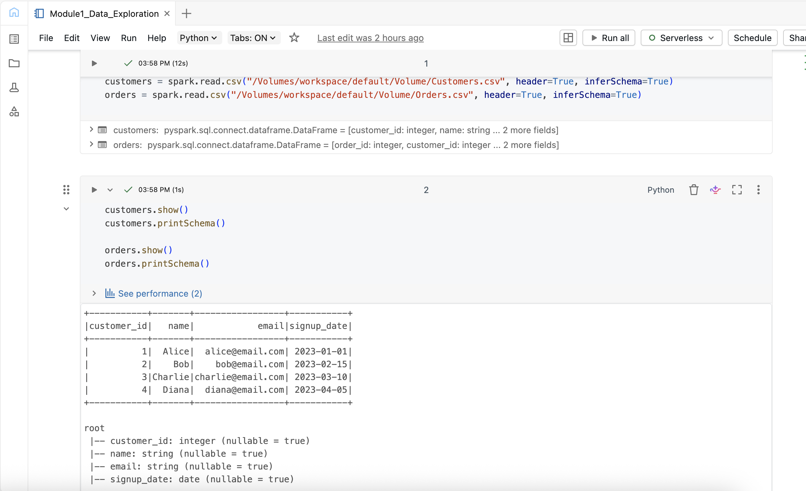
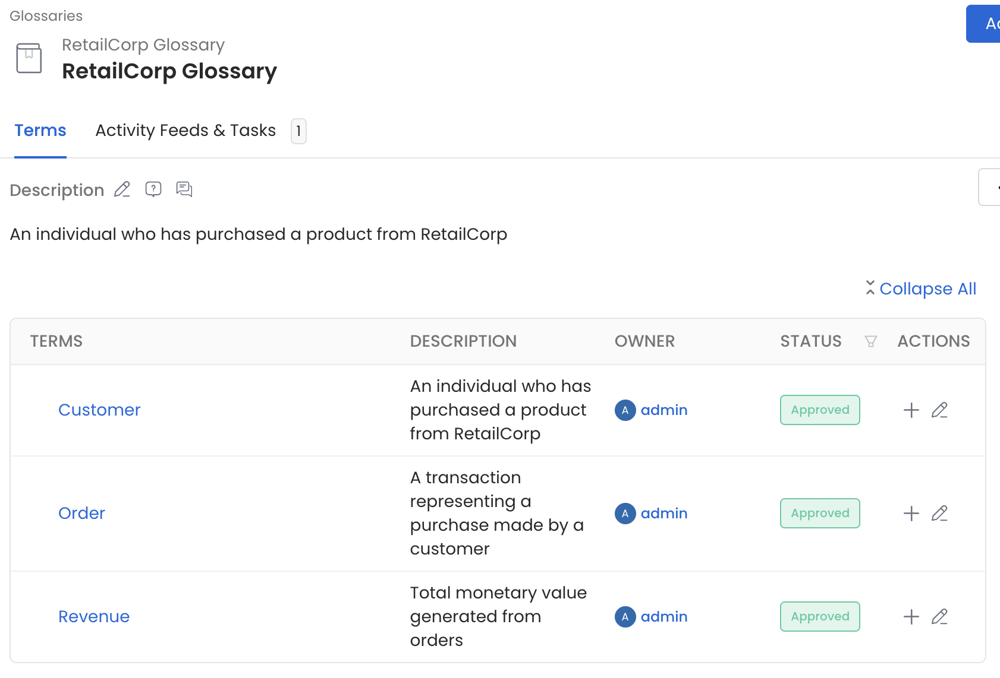
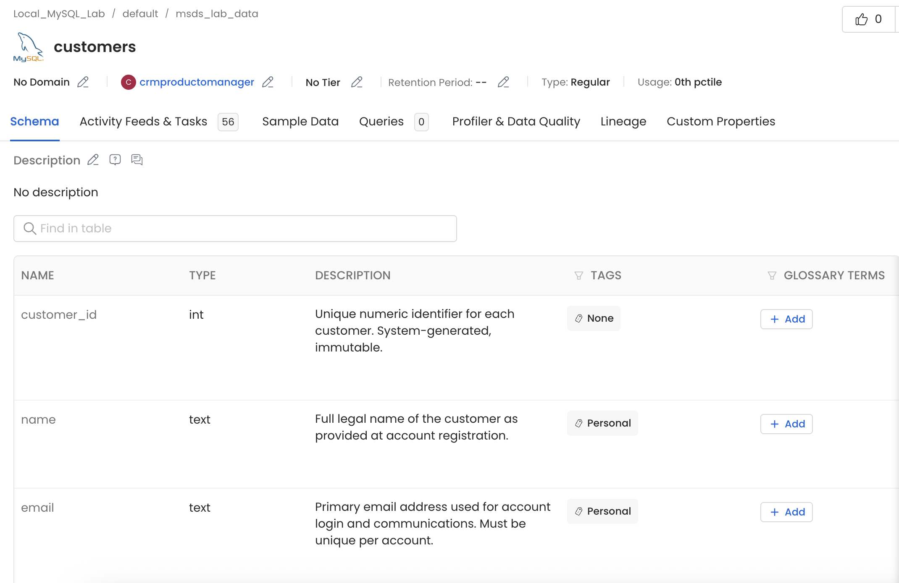
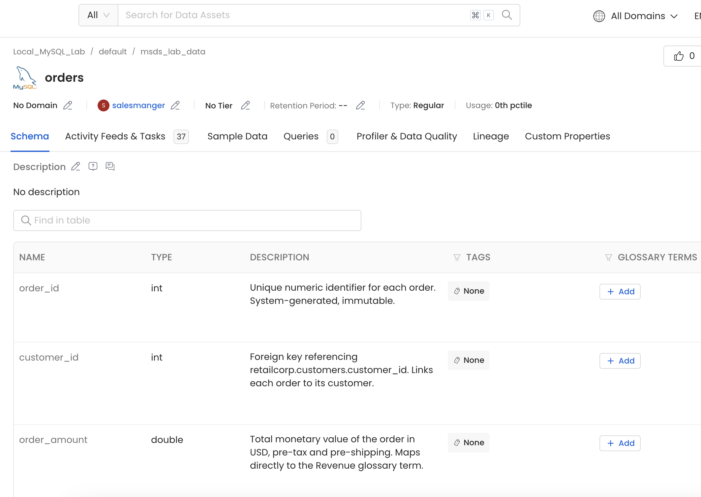
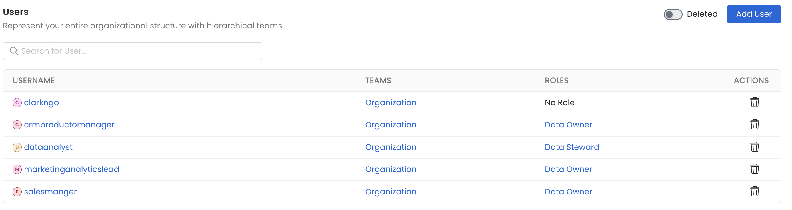
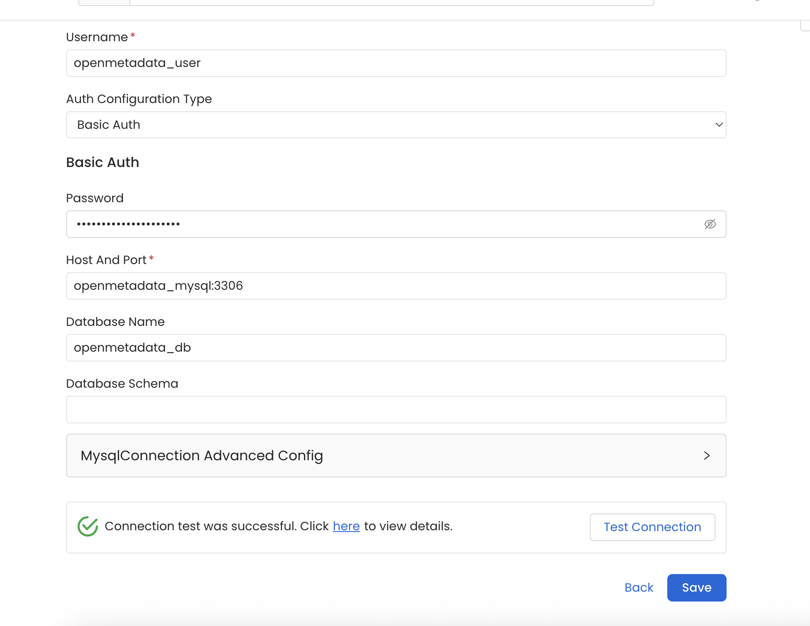
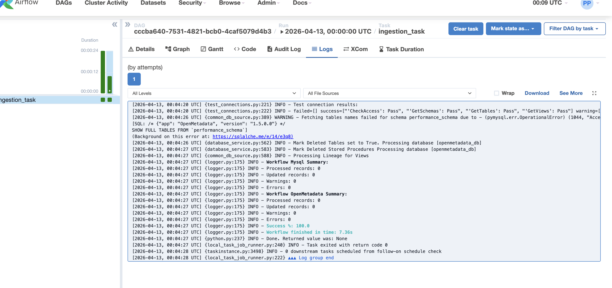
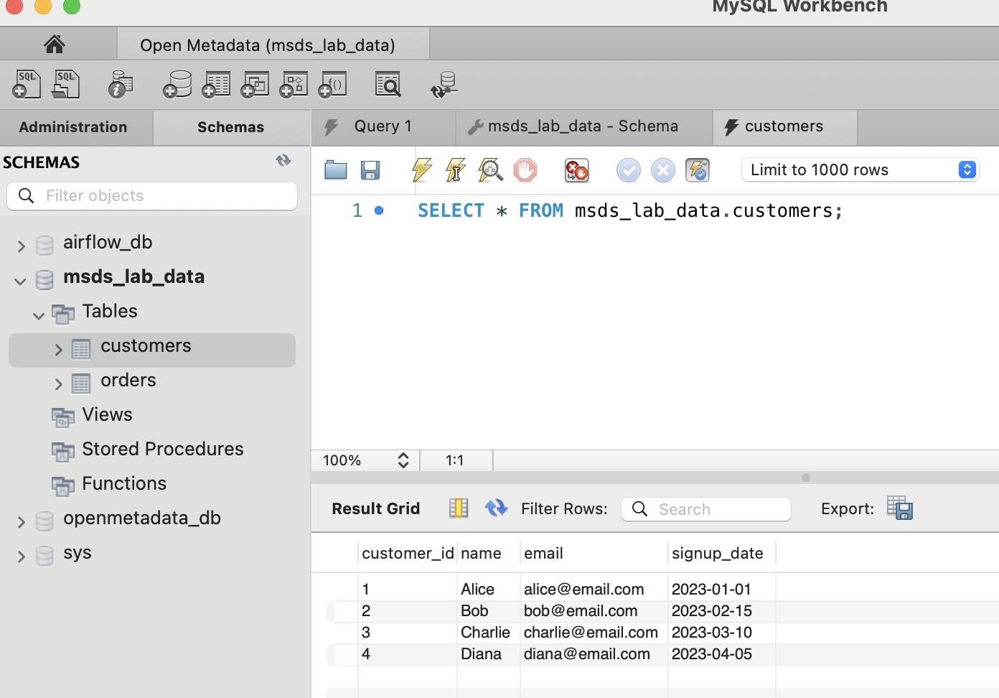
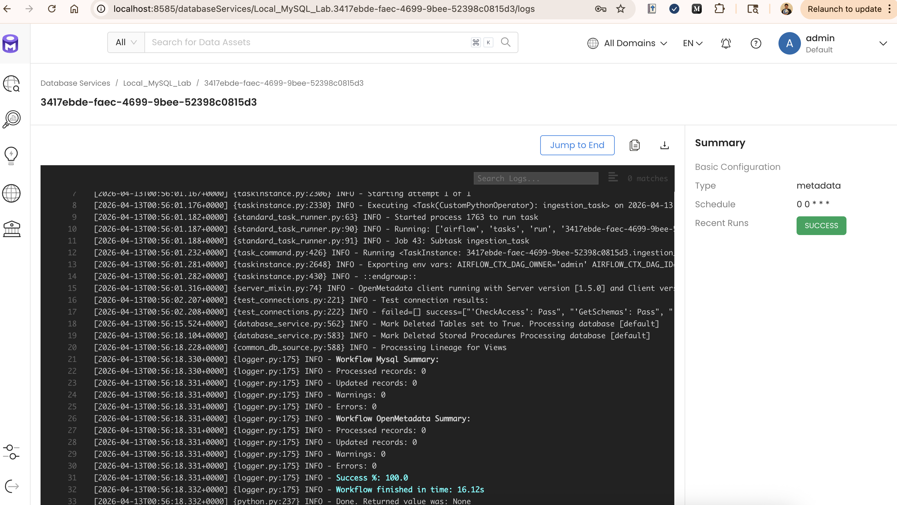

Playground
/Classroom Activities
/Data Governance
/Module 01
/Deliverables
🎓 Student Submission
Module 01 Deliverables
Enterprise Data Governance Foundation — RetailCorp Case Study — Clark Ngo
Submission Checklist — 5 / 5 Complete
✓
D1 — Databricks Notebook
Screenshot — Notebook Output

📷
01-databricks-notebook.png
— Module1_Data_Exploration notebook: CSVs loaded, schema printed
Embedded Notebook Export
RetailCorp Glossary — OpenMetadata

📷
02-glossary-three-terms.png
— Customer, Order, Revenue — all Approved, owned by admin
Customer — An individual who has purchased a product from RetailCorp •
Order — A transaction representing a purchase made by a customer •
Revenue — Total monetary value generated from orders
Customers & Orders Tables — OpenMetadata Schema Tab

📷
03-metadata-customers-table.png
— customers table: PII tags on name, email

📷
03-metadata-orders-table.png
— orders table: FK noted, Revenue term linked
customers: 3 columns — customer_id (PK), name (Personal tag), email (Personal tag). Owner: crmproductomanager •
orders: 3 columns — order_id (PK), customer_id (FK referencing customers), order_amount (mapped to Revenue glossary term). Owner: salesmanger
Users & Roles — OpenMetadata Admin View

📷
04-ownership-roles.png
— 5 users: 3 Data Owners, 1 Data Steward, 1 Admin
clarkngo — No Role (Admin) •
crmproductomanager — Data Owner •
dataanalyst — Data Steward •
marketinganalyticslead — Data Owner •
salesmanger — Data Owner
Lessons Learned & Troubleshooting
This session was a masterclass in modern data stack troubleshooting. We navigated the complex "middle layer" where Docker networking, database permissions, and metadata orchestration collide.
1. The "Parallel Universe" — Local vs. Docker
The biggest roadblock was the existence of two separate MySQL worlds fighting for the same door (Port 3306).
- The Conflict: Local MySQL (Homebrew) and Docker MySQL (OpenMetadata backend) both wanted to own
localhost:3306.
- The Symptom: MySQL Workbench showed
sakila and world (local), while OpenMetadata was looking for its own system tables (Docker). They were "talking past each other."
- Lesson Learned: Always check what is "squatting" on your ports. Using
brew services stop mysql or checking lsof -i :3306 is essential when working with containerized databases.
2. Airflow Logs: "Who" vs. "What"
We spent time navigating the Airflow UI to find why the crawler was not finding the data.
- Audit Logs: Show only high-level events (e.g., "Manual run started by admin").
- Task Instance Logs: Provide the actual "ground truth." This is where we found the critical line:
Processed records: 0.
- Lesson Learned: To debug ingestion, ignore the Audit Log and drill into the Logs tab of the specific Task Instance. Look for schema scan counts and table match patterns.
3. The "Access Denied" Saga
Even after merging the "universes," MySQL security layers provided several final bosses.
- Docker Networking: MySQL inside a container sees the Mac as a remote IP (
192.168.65.1). It does not trust root unless specifically told to.
- The Fix: Used the wildcard grant:
GRANT ALL PRIVILEGES ON *.* TO "root"@"%".
- Default Schema Trap: MySQL Workbench tries to "enter" a database on connection. If that database does not exist in the specific instance being hit, the connection fails even if the password is correct.
- Lesson Learned: Keep the Default Schema blank in Workbench until certain which instance you are connected to.
4. Ingestion Filters & Case Sensitivity
The OpenMetadata crawler is precise — and unforgiving.
- The Hurdle: Ingestion filters are case-sensitive. If the table is
customers (lowercase) but the filter is Customers (uppercase), the crawler reports "Success" but finds 0 records.
- Lesson Learned: When in doubt, clear all filters and let the crawler scan the entire schema. Once data appears, use Excludes to hide system noise like
information_schema.
5. Metadata Governance: Roles vs. Ownership
We distinguished between "what a person can do" and "who is responsible for the data."
- Roles (Access Control): Global permissions (e.g., Data Steward). If a role like "Data Owner" is missing, create a Custom Role in settings.
- Ownership (Asset Metadata): A field on the table itself. Assigning an owner defines accountability, regardless of that user's system role.
- Lesson Learned: Assigning a Steward (technical expert) and an Owner (business expert) to the same table is the gold standard for data governance.
Supporting Evidence — Setup & Pipeline

📷
00-setup-connection-test.png
— OpenMetadata: MySQL connection test SUCCESS

📷
00-setup-airflow-ingestion-log.png
— Airflow: ingestion_task log — Workflow finished

📷
00-setup-mysql-data.png
— MySQL Workbench: msds_lab_data.customers — 4 rows verified

📷
00-setup-ingestion-success.png
— OpenMetadata: pipeline run — SUCCESS badge
Why governance matters: This lab made it concrete — without enforced ownership, clear definitions, and quality checks at every layer (Docker networking, MySQL permissions, Airflow ingestion filters, OpenMetadata field-level tags), data becomes inaccessible, untrustworthy, or silently wrong. Every troubleshooting step in this session was a governance failure made visible: a missing access grant, an undefined schema, a case-sensitivity mismatch. Governance is not paperwork — it is what keeps the data pipeline honest.